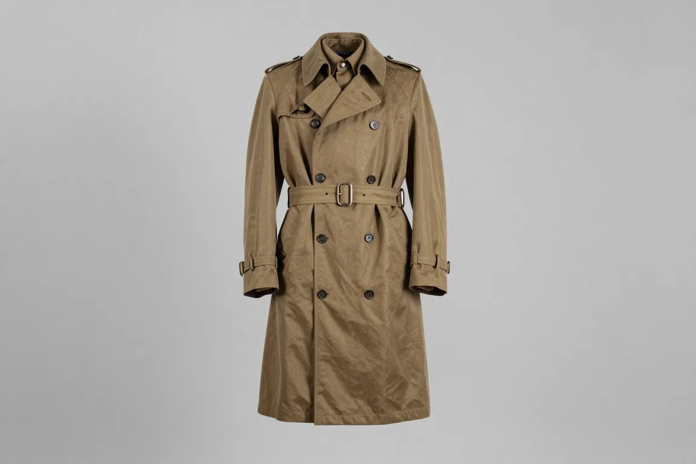

Drakten til offiseren og soldaten i felten. En dobbeltradet trenchcoat av gabardin med stormklaff og belte, og en kakifarget feltjakke av bomull med fire lommer.

Kjerneidé
En uniform tjener hver stropp, klaff og lomme gjennom en oppgave i gjørma: hold regnet ute, bær utstyret og vis grad.
Designprinsipper
Skjær frakken 10 til 15 cm under kneet, slik at den dekker låret i huk.
Doble fronten med 10 cm overlapp og to rader med seks knapper.
Legg til en stormklaff over høyre skulder, for å lede regn bort fra fronten.
Legg til en geværklaff over brystet; bruk et belte av samme stoff med en D-ring.
Bruk et regnstoff som avviser vann og lar kroppen puste.
Legg et innknappet fór i frakken slik at bæreren kan bytte det med sesongen.
Farg stoffet i kaki, stein eller oliven, fargene på støv og gjørme.